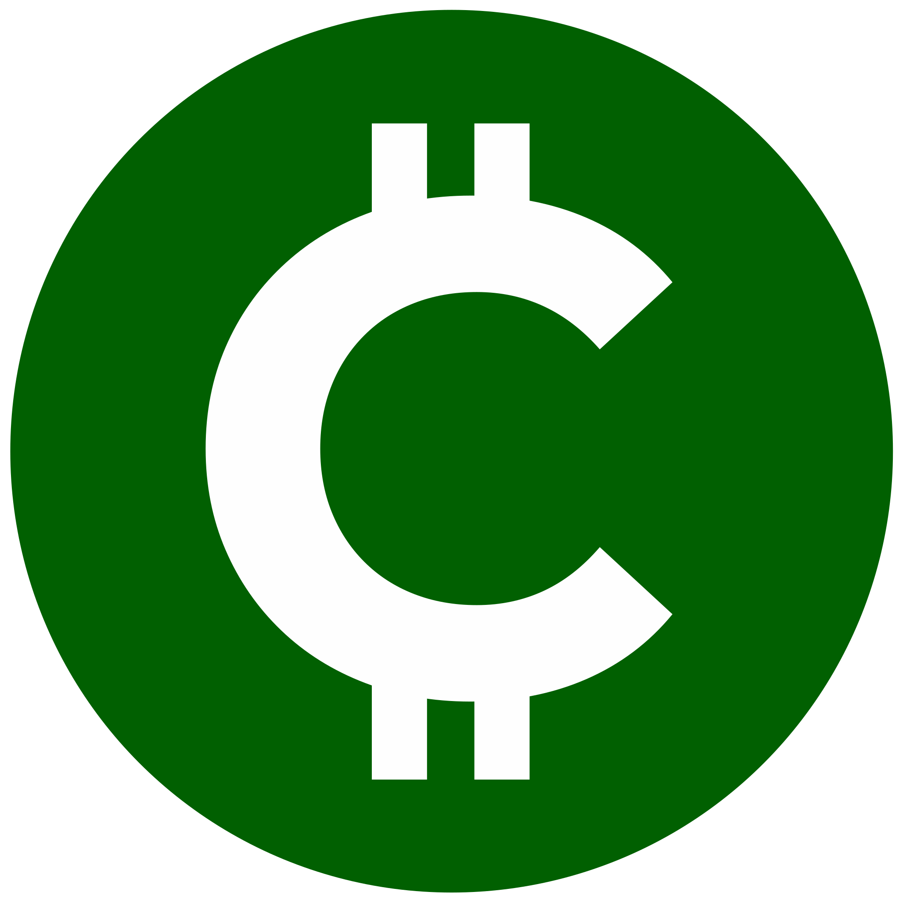

CONCORDIA CASH
Decentralized by Design. Governed by You.
Your Coins, Your Voice.
Authors: Concordia Curators concordia.curators@gmail.com
Status: Draft v0.3 – Open for Review
Last Updated: 2025-06-21
Concordia Cash (CNCD) is a decentralized, DAO-first blockchain built to reclaim value from abandoned chains and empower communities through direct governance. It introduces a verifiable burn-and-mint process where legacy coin holders can voluntarily migrate into a new system governed entirely by its users. CNCD rejects centralized leadership, premine allocations, and discretionary decision-making. Every protocol change, budget allocation, and strategic direction is decided by coin holders through transparent on-chain voting. Curators, appointed temporarily, serve only to execute the DAO's will and uphold its Constitution. By embedding governance as a foundational principle, not an afterthought, Concordia Cash transforms what was lost into a new form of collective ownership and sovereignty.
Blockchain promises decentralization, but most networks still depend on informal leadership structures, centralized developer groups, or foundation-driven agendas. The gap between coin ownership and meaningful participation remains wide, with decisions made behind closed doors or through social consensus that lacks accountability.
Concordia Cash was created to close this gap. It is a permissionless, community-owned chain where decisions are made not by developers or executives, but by coin holders through a formalized DAO framework. It is a reaction to ecosystems that collapsed due to mismanagement and centralization, and a demonstration of what becomes possible when power is distributed by design.
The project begins with a migration process: users destroy legacy coins and receive CNCD in return. This burn-based entry mechanism filters out passive holders and opportunists, creating a network of engaged participants. From there, the Concordia DAO governs everything, from economic parameters to development priorities and treasury spending, via on-chain proposals and masternode voting.
Concordia Cash is not an experiment in code. It is an experiment in governance. And the outcome is not dictated by a team. It is authored by everyone who chooses to participate.
The DECENOMY ecosystem began as a loosely coordinated collection of independent blockchains. Over time, however, its centralization around a single leadership figure led to its collapse. Decisions were made unilaterally, with a small inner circle controlling infrastructure, and there were no formal governance processes through which communities could intervene or redirect the project. When that leadership became inactive, the ecosystem stalled. Development stopped, community members lost access to exchange infrastructure, and no one had the authority or tools to restore momentum. What could have become a thriving federated system deteriorated into fragmented, stagnant chains with diminishing relevance.
This kind of failure is not unique to DECENOMY. Governance remains one of the most unresolved challenges in blockchain architecture. Even prominent Layer 1 projects struggle with this. Ethereum, for example, relies on informal social consensus shaped by core developers and the Ethereum Foundation. ETH holders do not have formal voting rights. Instead, decisions are made in meetings and chats among developers and then implemented through hard forks. Vitalik Buterin, although he is not officially in charge, still holds considerable influence, especially within the Ethereum Foundation. This centralized leadership focused on a single person and lacking a token holder voting mechanism continues to raise concerns about the project’s decentralization and legitimacy.
Bitcoin, on the other hand, has a radically minimalist governance model, where its protocol is famously resistant to change, and BTC holders have no way to vote, propose updates, or express collective intent. Protocol changes are often chosen to be included by a small, selected, elite group of developers that must be adopted by a critical mass of miners and node operators through consensus in practice, not by design. While this has helped preserve Bitcoin’s resilience and neutrality, it has also led to protocol stagnation and a lack of innovation, as well as internal conflicts over controversial upgrades. Coin holders are spectators rather than participants.
Tezos provides an entirely different example. As one of the first chains to implement formal on-chain governance, it empowers its XTZ holders to propose and vote directly on upgrades. Its self-amending protocol allows it to evolve without hard forks. Every successful proposal can include funding mechanisms for contributors, ensuring a sustainable development cycle. Tezos proves that it is possible to design a Layer 1 chain where decisions are made transparently, collectively, and without dependence on off-chain authority.
Concordia Cash takes inspiration from this more democratic model. It transitions from a failed governance system, or the lack thereof, to a 180-degree turn where it is being rebuilt with a clear commitment to coin-holder sovereignty. Its DAO-first structure ensures that the community decides everything, from technical upgrades and protocol rules to budget allocation and team roles. Concordia is not just another chain. It is a response to the governance failures of the past and a demonstration of what community-led cryptocurrency can look like.
Concordia Cash is the community's answer to the systemic governance failures detailed above. Rather than continuing to operate within chains that lack transparency, leadership, and long-term viability, Concordia offers a clean break and a constructive path forward. It consolidates fractured coin communities into a single, actively maintained blockchain governed by the very people who use it.
The Concordia chain is more than a fork. It is a coordinated migration effort led by contributors who were once investors in the failed ecosystem. At its core is a proposal to revive abandoned value through a trustless, verifiable burn-and-mint process. Holders of legacy coins may voluntarily destroy them by sending to burn addresses published by the Concordia curators. Once confirmed on-chain, the holder is eligible to receive an equal amount of CNCD coins on the new Concordia network. This mechanism ensures that no new value is arbitrarily created, and that migration is grounded in transparency, proof, and fairness.
The project is built on the DSW codebase, selected for its modularity and reliability. However, Concordia is not simply a rebranded technical clone. From genesis, it integrates DAO-first governance and enforces the separation of power through code. All decision-making is vested in the hands of coin holders, not developers or curators. Protocol rules, network upgrades, funding allocations, and contributor roles are all subject to binding DAO proposals and votes.
To help launch the chain and facilitate the migration phase, a small group of initial curators has been appointed. These curators do not hold privileged authority and may be removed by DAO vote at any time. Their role is temporary and procedural: to bootstrap infrastructure, audit burn proofs, maintain communication channels, and assist in establishing the DAO's initial operational flow.
Concordia does not claim to be novel for its technology. Its strength lies in governance. Where previous chains silenced their communities and concentrated influence in opaque leadership, Concordia builds decision-making into the protocol itself. It is designed to be community-run, community-funded, and community-secured.
The Concordia Proposal is ultimately a collective act of reclamation. It transforms abandoned coins into building blocks for a new, autonomous future, one where governance is not a feature added later, but a foundation laid from the start.
At the genesis of the Concordia Cash network, a temporary group of contributors known as curators has been appointed to assist with launching the project and guiding the community through its early transition phase. These curators are not founders, executives, or permanent authorities. They are technical facilitators and community stewards, acting under a limited mandate defined by the Concordia DAO and bound to its authority from the beginning.
The curators’ responsibilities are narrowly scoped and explicitly defined. Their primary duties include publishing and maintaining burn addresses for each supported legacy coin, verifying burn proofs, authorizing CNCD coin issuance through the migration tool, and supporting core infrastructure such as seed nodes, block explorers, and wallets. They may also help coordinate communication with developers, exchanges, and community members to ensure the stability and continuity of the network during its bootstrapping phase.
Curators do not have control over protocol rules, funding decisions, treasury assets, or any strategic direction. They have no budget or central fund to operate from. All financial matters, including exchange listing fees, development grants, infrastructure costs, and marketing budgets, must be approved and allocated by the DAO through formal proposals and on-chain voting. The same applies to defining project priorities, initiating partnerships, or committing to major strategic efforts.
If the DAO votes to pursue a funded initiative, such as an exchange listing that requires a payment, curators may assist in executing the technical components, such as integration support or communication with listing teams. However, the financial responsibility must come from the DAO, not from the curators. In limited cases, the DAO may approve a donation address for community-led fundraising, and curators may be asked to manage or supervise that process under full transparency.
Ideally, the DAO will include or recruit qualified volunteers capable of handling coordination, business development, and technical interfacing with external platforms. The curators' role is to support, not to lead or fund such efforts.
In addition to operational and technical duties, curators are also responsible for safeguarding the integrity of the Concordia project. While fully accountable to the DAO and subject to its decisions, curators are required to ensure that all DAO-approved actions comply with the Concordia Constitution and governing framework. If any proposal or vote violates those foundational rules, curators must veto it. These vetoes are not discretionary. Each one must be publicly justified, with references to the relevant constitutional clauses or principles being upheld.
This mechanism is designed as a safeguard, not a source of power. It protects the DAO from unconstitutional behavior during its formative stages without undermining the authority of coin holders.
Curators may also assist in proposing the initial governance structures and submitting foundational DAO proposals to formalize roles, budgets, and procedures. However, all final decisions rest with the DAO, not the curators.
As Concordia matures and the DAO becomes fully autonomous, the need for curators will diminish. Their responsibilities will be phased out, and their positions may be modified, replaced, or revoked entirely by DAO vote at any time.
The curators exist to serve, not to rule. They do not fund the project. They do not define its future. Their authority is limited, their presence temporary, and their only mandate is to uphold the will of the community and the integrity of the chain.
The Concordia Constitution is the foundational framework of the DAO. It defines the rules, limits, and responsibilities that govern the Concordia Cash ecosystem, ensuring that power remains in the hands of the community and that all participants operate under a transparent and enforceable structure.
Unlike informal or off-chain governance systems, the Constitution is an explicit, binding document. It outlines the rights of masternode owners, the obligations of curators, the authority of the DAO, and the mechanisms by which decisions must be made and enforced. This document serves as the legal and procedural backbone of Concordia’s governance.
Curators are bound to uphold the Constitution. They must veto any DAO-approved action that violates its rules and provide a public, clause-based justification. However, curators themselves are not above the Constitution. Their vetoes may be challenged by the DAO and overridden with sufficient consensus. This layered system protects the DAO from internal abuse without creating new points of centralization.
The Constitution is also a living document. It may be amended through DAO proposals that meet high quorum and approval thresholds, ensuring that change is possible but not easily manipulated.
Below is the initial version of the Concordia Constitution, present at project launch.
Article I. The Concordia DAO holds the ultimate authority over the project.
Article II. Each Concordia masternode grants voting power to its registered owner. Masternode ownership must be verifiable on-chain and subject to technical and collateral requirements defined by DAO governance.
Article III. All proposals must follow the submission, quorum, and voting procedures defined in the DAO governance rules.
Article IV. The DAO has exclusive authority to allocate funds, approve development, manage listings, and define strategic direction.
Article V. Curators are temporary contributors without ownership, executive power, or privileged access.
Article VI. Curators must fully obey all DAO-approved decisions that comply with the Constitution.
Article VII. Curators must veto any DAO-approved action that violates the Constitution. Vetoes must be issued promptly and documented.
Article VIII. All vetoes must include a public, written justification referencing the specific article or rule violated.
Article IX. Any veto may be challenged and overturned through a supermajority DAO override proposal, requiring at least 66% participation and 75% approval.
Article X. Curators may assist with operational tasks such as publishing burn addresses, verifying burn proofs, maintaining infrastructure, and coordinating technical processes.
Article XI. Curators may not access or control any DAO treasury funds under any circumstances.
Article XII. Actions involving payment or resource allocation, including exchange listings, must be proposed, authorized, and funded by the DAO.
Article XIII. The DAO may approve donation-based campaigns to support specific initiatives.
Article XIV. Donation addresses must be publicly listed, auditable, and may only be managed by curators if explicitly authorized by DAO vote.
Article XV. Curators must use secure, transparent methods such as multi-signature or escrow systems when handling donation funds.
Article XVI. All development, marketing, listings, and partnerships must be proposed and approved by the DAO prior to execution. No official activity may proceed without DAO authorization.
Article XVII. Any Concordia participant may submit a proposal, subject to the governance rules defined by the DAO.
Article XVIII. The Constitution may be amended through a valid constitutional proposal approved by the DAO. Amendments require a minimum quorum of 66% of active masternodes and at least 75% approval.
Article XIX. All governance processes and decisions must be transparent, permanently recorded, and publicly auditable.
Article XX. Concordia coin holders have the right to submit proposals, vote on governance matters, and inspect all public project records.
Article XXI. No central authority, development team, or curator may override the will of the DAO under any circumstance.
Article XXII. In the event of a dispute or conflict over interpretation or enforcement of this Constitution, the DAO may initiate a binding arbitration vote to determine resolution.
The Burn Process is the mechanism by which value is migrated from abandoned chains into the Concordia Cash network. It is a public, verifiable, and irreversible process. Users voluntarily destroy their legacy coins to receive CNCD coins, committing to the new chain and its governance in the process.
Snapshot-based or message-signing methods may seem simple, but they lack any real commitment. A user could claim CNCD coins without giving up the original ones. This opens the door to short-term profit-seeking, governance manipulation, and inflation through duplication.
There is no cost to participate. There is no accountability. It allows users to extract value without supporting the project.
By contrast, the burn model ensures that participation is deliberate. The user takes an action that cannot be reversed. The burn is permanent and visible to all. There is no duplication. The user either exits the old system or remains outside Concordia. There is no middle ground.
Users send their legacy coins to a specific, well-known burn address on the original chain. These addresses are generated deterministically and are unspendable. No one, including curators or developers, can access the funds sent there.
The list of burn addresses can be retrieved using the getburnaddresses RPC command on the source chain. If multiple addresses are returned, the DAO will select the official one and the curators will publish it accordingly.
Once the burn transaction is completed, the curators verify the burn and issue the equivalent amount of CNCD coins to the user’s wallet address on the Concordia chain. Every minting event is logged and publicly auditable.
Burns on the Concordia chain itself will be marked using an OP_RETURN to ensure they are permanent and easy to verify.
A total of sixteen billion CNCD coins are reserved for the burn process. This supply will not be used for anything else.
The burn window remains open for six months after the launch of the chain. During this time, users can migrate their coins at a one-to-one ratio.
In the final ten weeks of the burn period, the conversion rate will decrease gradually. Each week, curators will destroy ten percent of the remaining unclaimed CNCD supply. At the same time, the burn ratio will decrease by ten percent each week. By the end of the tenth week, no more conversions will be allowed.
Any CNCD coins that remain unclaimed at the end of the six-month window will be permanently destroyed.
Burning legacy coins is not only a technical action. It is a formal agreement to enter the Concordia network under the rules of its Constitution. By burning, the user accepts Concordia's governance structure, community ownership model, and proposal system.
The burn process ensures fairness, transparency, and real commitment. There are no shortcuts. There is no duplication. If you wish to join Concordia, you prove it with action.
Concordia Cash is a governance-first blockchain designed to empower its community to shape its future through transparent, decentralized decision-making. Its foundation is minimal by design: no pre-mines except for the burn-and-mint process, no privileged stakeholders, no central foundation. From genesis, all authority is vested in the DAO, and only masternode holders may vote.
The Concordia network begins with a single, clear use case: to serve as a living example of transparent, verifiable, coin-holder-driven governance. But its architecture supports far more. Because the DAO holds full authority, any future direction can be proposed, debated, and implemented. There is no fixed roadmap. Instead, there is a collective mechanism to define and vote on future priorities.
The Concordia DAO can act as a governance layer for many different purposes. It can be used by cooperatives, open-source communities, protocol alliances, or digital associations seeking transparent, decentralized control over treasury, rules, and upgrades. Its on-chain proposal and voting system enables structured decision-making at the protocol level, enforced not by trust, but by code.
Through binding proposals, the DAO may allocate treasury funds to support development, infrastructure, community events, educational materials, translation efforts, or integrations. Every funding decision must pass through on-chain governance. This ensures that contributors remain accountable to the network and the public. Proposals may include deliverables, milestones, and budgets, all managed through DAO oversight.
The Concordia codebase inherits modular features from its DSW and PIVX roots. The DAO may vote to activate, modify, or extend existing modules, or develop entirely new ones. Potential additions include:
All enhancements must be proposed and approved on-chain. If a feature does not receive active consensus from the community, it is not implemented. The network evolves only with intentional agreement from its coin holders.
The DAO may choose to fund or build tools that serve the broader ecosystem. Examples include block explorers, wallet improvements, educational platforms, oracles, and grant programs. These public goods are developed and maintained by the community. They serve as practical demonstrations of decentralized coordination.
Because Concordia is a permissionless and DAO-led blockchain, its potential use cases are open-ended. The possibilities are not dictated by a roadmap or central authority. They are determined by the community, through open proposals and transparent votes.
Concordia is not defined by a narrow use case. It is defined by its structure. Its utility flows from its autonomy, and from the ability of its users to govern themselves.
Concordia Cash (CNCD) uses a dynamic rewards model designed to align coin issuance with actual network participation and circulation. This system promotes economic stability, minimizes inflation risks, and reinforces long-term sustainability through community-driven control.
The initial supply of CNCD is not fixed in advance. It is generated exclusively through the burn process. For every coin burned on a supported legacy chain, an equivalent amount of CNCD is minted.
This means:
Up to sixteen billion CNCD coins have been reserved for this process. The final initial supply will depend on the number of legacy coins destroyed during the six-month burn window. Any coins not claimed by the end of that period will be permanently burned.
To support early network participants and ensure fair rewards while the DAO organizes itself, Concordia includes a fixed reward phase at launch. For a limited period, block rewards will be set to a predefined subsidy amount.
Key parameters:
This bootstrap phase guarantees that early node operators and contributors are fairly rewarded before dynamic adjustments begin.
After the initial phase, CNCD enters a dynamic emission phase. Block rewards are calculated and adjusted in response to two supply metrics:
Circulating supply, estimated as:
All UTXOs less than three months old count at full value
This model ensures that only actively circulating coins influence economic policy.
Two independent targets are calculated for each reward cycle:
These two values are averaged to produce the cycle's target emission rate.
After each reward interval:
This allows the network to react gradually to changing conditions without dramatic fluctuations.
If on-chain activity drops, rewards are scaled back. If coin movement increases, rewards rise accordingly. This mechanism helps preserve purchasing power and incentivize ongoing participation.
All parameters related to the emission model are fully governed by the DAO. Masternode holders may propose and vote on changes to:
No fixed group or central team controls monetary policy. The community decides how its economy should evolve.
The Concordia tokenomics framework avoids artificial inflation and speculative overreach. It is designed to ensure:
This approach reinforces the project's foundational principles. Participation is optional, supply is earned, and governance is sovereign.
Concordia Cash is governed by a transparent and binding on-chain DAO. All structural decisions, protocol changes, budget allocations, and contributor roles are decided by coin holders through masternode-based voting. There are no central authorities, teams, or developers with privileged control.
This governance model is embedded in the protocol and enforced by the Concordia Constitution. All participants operate under the same set of rules, and all actions must be publicly recorded and verifiable.
Each masternode grants one unit of voting power to its owner. Masternodes must meet the technical and collateral requirements defined by the DAO. Only masternode owners may vote or propose changes.
This system ensures that participants with long-term commitment and real stake determine the future of the chain. Passive staking and speculative governance are not allowed.
The DAO accepts different categories of proposals, each with clear rules and approval requirements:
All proposals must follow the defined submission format, reach quorum, and meet the required approval percentage to be enacted.
No proposal may be executed until it is approved by DAO vote. All execution must match the approved contents of the proposal. Any off-chain agreements or unauthorized actions are considered invalid.
Approved proposals must be:
DAO actions may include payments, role assignments, protocol upgrades, or strategic decisions. Curators or volunteers may assist with technical implementation, but they are not allowed to modify or reinterpret the outcome.
Curators are procedural contributors responsible for operational tasks such as:
They have no voting power and do not control treasury funds, listings, or protocol direction. All authority flows from the DAO.
Curators must obey all DAO-approved decisions that comply with the Constitution. If a proposal violates the Constitution, curators are required to veto it. Each veto must include a full public explanation referencing the violated article.
Vetoes are not final. The DAO may challenge any veto and override it through a supermajority proposal as defined in the Constitution.
The DAO may also vote to remove, replace, or limit the authority of curators at any time.
Every DAO proposal, vote, veto, and execution must be publicly accessible and permanently auditable. Participants have the right to:
This ensures that governance remains fair, consistent, and responsive to community needs.
The governance system is designed to evolve. Through constitutional proposals, the DAO can:
However, all such changes must be approved through the same process and must follow the Constitution.
Concordia governance is not based on leadership or trust. It is based on transparent procedure, recorded votes, and binding action.
All Concordia Cash (CNCD) governance actions are driven by on-chain DAO proposals. These are submitted, discussed, voted upon, and either approved or rejected by masternode holders. Each proposal type serves a specific purpose within the ecosystem and follows the constitutional process defined in the Concordia governance model.
Protocol Change Proposals (PCPs) are used to alter the consensus rules or blockchain-level behaviors of the CNCD network. These proposals may involve:
Key Characteristics:
Development Proposals (DPs) are used to introduce new features, tools, or services that improve the Concordia ecosystem. This includes:
Key Characteristics:
Budget Proposals (BPs) request allocation of funds from the DAO treasury to support activities such as:
Key Characteristics:
Governance Amendment Proposals (GAPs) are special proposals intended to update the CNCD Constitution or foundational governance mechanisms. These are the only proposals capable of redefining the structure, limits, and rules of the DAO itself.
Key Characteristics:
These proposal types form the core of Concordia Cash’s governance process. By allowing anyone to propose and every masternode to vote, CNCD ensures a fair, participatory model with no centralized gatekeeping or special privileges.
Once a proposal is approved (whether protocol, budget, or development), implementation begins. Curators coordinate but do not control execution. Key steps include:
Proposals that require critical consensus changes will undergo additional review and must be packaged in a format the entire validator set can adopt with minimal disruption.
The DAO can always reject, revoke, or delay implementation through subsequent proposals if necessary.
This proposal system ensures that Concordia Cash evolves based on transparent, decentralized decision-making. All holders are empowered to suggest improvements, allocate funds, and shape the future of the chain.
There is no central dev team with override authority, no foundation with veto power, and no corporate sponsor shaping the roadmap.
The DAO governs Concordia. Curators simply execute its will.
This structure brings power back to the community where it belongs. What gets built is determined not by a boardroom, but by proposals, one vote at a time.
Concordia Cash (CNCD) was created in response to years of frustration, misaligned incentives, and centralized decision-making in legacy blockchain projects. Rather than patching broken structures, CNCD offers a clean slate, built by the community, for the community.
There are no inherited privileges, no pre-mines, and no special allocations. Entry into CNCD is earned voluntarily through a transparent 1:1 burn process. It is a symbolic and irreversible commitment: a signal of belief in a new system where value is built from the ground up through participation and accountability.
At its core, CNCD is a permissionless, DAO-governed blockchain. Curators are not leaders or authorities. They hold no voting rights or control over governance. Their role is strictly operational: to manage off-chain infrastructure, ensure technical implementation of approved proposals, and eventually sunset their position when full decentralization is viable.
Every decision, from protocol upgrades and development priorities to funding and governance, is made through open proposals and masternode voting. The DAO is not a formality. It is the sovereign governing structure of CNCD.
The use cases for CNCD will evolve as the DAO shapes them. The chain begins as a streamlined, minimal foundation, capable of growing into multiple directions. Utility, real-world applications, and protocol extensions are all possible, and no gatekeepers stand in the way. What gets built is entirely up to those who participate.
This project wasn't launched with corporate backing or speculative hype. It was launched with code, transparency, and the principle that if the rules are fair and power is evenly distributed, trust can be rebuilt, not by slogans, but by systems.
Concordia means agreement, harmony, alignment.
In this chain, that harmony is earned through participation, not permission.
The future of CNCD won't be dictated.
It will be decided.
By you.

Welcome to the official brand guidelines for CONCORDIA CASH.
This document is your comprehensive guide to understanding and correctly applying our brand identity, reflecting our bold and revolutionary mission in the blockchain landscape.
Born from the merge of 17 abandoned blockchains, CONCORDIA is not just a new platform, it's a new philosophy of decentralized governance.
Consistent use of these guidelines will ensure that CONCORDIA CASH is always presented clearly and powerfully, reinforcing our vision to unify and revitalize forgotten projects, and empower users through complete transparency and participation.
These guidelines are intended for all members, partners, developers, and anyone creating communications for or about CONCORDIA CASH.
The CONCORDIA CASH logo is the most recognizable element of our brand.
This section outlines its correct usage, variations, and restrictions. Consistent application of the logo is essential for maintaining brand recognition and integrity across all platforms and materials. It visually embodies our commitment to precision, reliability, and innovation.
The primary logo features a stylized 'C' within a green circle. The 'C' is inspired by the Montserrat Bold typeface, reflecting strength and modernity.
The circular enclosure symbolizes unity, the decentralized nature of our DAO, and the collective power derived from our community.
It represents the unification of diverse projects into a cohesive, secure ecosystem.
To ensure versatility across platforms and applications, the following logo variations are officially approved.
Each variation maintains brand integrity while allowing flexibility for different backgrounds, use cases, and design requirements.
| Variation | Description | Example |
|---|---|---|
| Icon / Favicon | For all kind of applications | |
| Monochrome Reverse | For dark backgrounds | |
| Black & White Negative | For specific applications |
The logo can be combined with the "CONCORDIA CASH" logotype to form the complete brand mark.
This lockup ensures consistent presentation of the full brand name alongside the iconic symbol, reinforcing brand recognition and professionalism across all applications.
| Variation | Description | Example |
|---|---|---|
| Vertical (Full Color) | Combined Logo & Text | |
| Vertical (Monochrome Reverse) | Combined Logo & Text | |
| Vertical (Black and White) | Combined Logo & Text |
| Variation | Description | Example |
|---|---|---|
| Horizontal (Full Color) | Combined Logo & Text | |
| Horizontal (Monochrome Reverse) | Combined Logo & Text | |
| Horizontal (Black and White) | Combined Logo & Text |
To maintain legibility and visual impact, please adhere to the following guidelines: - Clear Space: A protective clear space must surround the logo at all times, free from text, graphics, or any distracting elements. This space should be proportionate to the size of the logo itself to preserve its integrity and visibility. - Minimum Size: The logo must never be used below the specified minimum dimensions. Using it at a smaller scale can compromise legibility and negatively impact brand perception.
| Application | Minimum Width/Height |
|-------------|----------------------|
| Digital (Web, Apps) | 32 pixels |
| Print (Small items) | 1 cm / 0.4 inches |
| Favicon / App Icon | 16 pixels (full logo) |
| Black and White (Negative) | 32 pixels |
To maintain brand integrity, the CONCORDIA CASH logo must not be altered in any way. The following are examples of misuse that are strictly prohibited.
Adhering to these restrictions ensures the logo is always presented as intended, reinforcing a consistent, recognizable, and professional brand image across all platforms and materials.
| DO NOT | Description |
|---|---|
| Stretch or Distort | Do not alter the logo’s aspect ratio under any circumstances. |
| Use unauthorized colors | Only approved brand colors should be used |
| Add Effects (Shadows, etc.) | Avoid applying shadows, glows, or other stylized effects such as 3D rendering |
| Place on Busy Backgrounds | Ensure sufficient contrast and maintain clear space around the logo |
| Rotate | Keep the logo upright at all times. It must never be rotated or tilted |
| Outline | Do not add outlines, strokes, or borders that are not part of the original design |
The CONCORDIA CASH color palette is integral to our brand identity. It evokes trust, innovation, and financial stability.
This section details our primary, secondary, and accent colors, along with their specific codes for digital and print applications. Consistent use of these colors is key to a unified brand presence.
These colors form the foundation of the CONCORDIA CASH brand identity and are derived directly from the logo. As cornerstone colors, they should be used most prominently across all brand materials.
| Color Name | HEX | RGB | Usage | Color |
|---|---|---|---|---|
| Concordia Green | #016001 |
1, 96, 1 | Primary branding, logo, calls-to-action | |
| Concordia White | #FEFEFE |
254, 254, 254 | Backgrounds, text on dark backgrounds |  |
These colors complement the primary palette and should be used to enhance design elements such as UI components, illustrations, icons, or data visualizations.
Use them thoughtfully to reinforce brand harmony while ensuring Concordia Green and White remain dominant in all applications
| Color Name | HEX | RGB | Usage | Color |
|---|---|---|---|---|
| Tech Blue | #2A80B9 |
42, 128, 185 | Secondary actions, tech graphics |  |
| Dark Neutral Grey | #4B5563 |
75, 85, 99 | Body text, secondary information | |
| Light Neutral Grey | #D1D5DB |
209, 213, 219 | Borders, dividers | |
| Accent Gold | #FFD700 |
255, 215, 0 | Highlights, premium features |  |
#FEFEFE text on Concordia Green #016001 provides excellent contrast.Gradients can add depth and a modern aesthetic when used thoughtfully. Approved gradients are derived from our core brand colors to ensure visual consistency and alignment with our identity.
They are primarily recommended for backgrounds, large graphical elements, or subtle UI accentsm, always supporting the brand’s visual hierarchy without overshadowing key messaging or elements.
| Color Name | HEX | Usage | Color |
|---|---|---|---|
| Concordia Green Gradient (Darker) | linear-gradient (to right, #016001, #004000) |
Primary backgrounds, hero sections, large graphical elements. |  |
| Concordia Green to Tech Blue Gradient | linear-gradient (to right, #016001, #2A80B9) |
Dynamic UI elements, data visualization backgrounds, subtle transitions. |  |
| Light Neutral Gradient | linear-gradient (to bottom, #FEFEFE, #D1D5DB) |
Subtle background textures, card elements, containers. |  |
Always ensure text placed on gradients has sufficient contrast and readability.
Avoid using gradients for small text or intricate details.
Typography plays a crucial role in communicating the personality and values of CONCORDIA CASH. This section defines the official fonts, their recommended usage, and typographic hierarchy.
Consistent typography ensures readability and a cohesive visual language that aligns with our modern, trustworthy identity.
Montserrat is our primary font. Its geometric forms and clean lines reflect modernity and stability, aligning with the 'C' in our logo (which was inspired by Montserrat Bold). It is highly versatile and should be used for headlines, subheadings, and prominent text elements.
Available via https://fonts.google.com/specimen/Montserrat
Key Weights: - Montserrat Black (900) - For major headlines. - Montserrat Bold (700) - For H2, H3, key calls-to-action. - Montserrat SemiBold (600) - For H4, emphasis. - Montserrat Medium (500) - For navigation elements and certain UI components. - Montserrat Regular (400) - For short descriptive text where Montserrat is preferred over body copy.
For body copy and longer text passages, Open Sans serves as our recommended secondary font. This highly legible humanist sans-serif complements Montserrat beautifully, offering excellent readability both on screen and in print.
Available via https://fonts.google.com/specimen/Open+Sans
Key Weights: - Open Sans Bold (700) - For emphasis within body copy. - Open Sans Regular (400) - For all main body text. - Open Sans Light (300) - For captions or tertiary information.
A clear typographic hierarchy enhances readability and guides the reader through content effectively. Follow this typographic scale for optimal consistency:
| Type Element | Font Family | Weight | Size (Desktop / Mobile) | Line Height | Color |
|---|---|---|---|---|---|
| H1 / Page Title | Montserrat | Black (900) | 2.5rem (40px) / 2rem (32px) | 1.2 | #016001 |
| H2 / Section Title | Montserrat | Bold (700) | 2rem (32px) / 1.75rem (28px) | 1.3 | #016001 |
| H3 / Subsection Title | Montserrat | SemiBold (600) | 1.5rem (24px) / 1.25rem (20px) | 1.4 | #016001 |
| H4 / Sub-subsection | Montserrat | SemiBold (600) | 1.25rem (20px) / 1.125rem (18px) | 1.5 | #1f2937 |
| Body / Paragraph | Open Sans | Regular (400) | 1rem (16px) / 0.9375rem (15px) | 1.6 | #4b5563 |
| Lead Paragraph | Open Sans | Regular (400) | 1.125rem (18px) / 1rem (16px) | 1.7 | #4b5563 |
| Links / Buttons | Montserrat | Medium (500) | 1rem (16px) / 0.9375rem (15px) | 1.5 | #016001 |
| Small Text / Caption | Open Sans | Regular (400) | 0.875rem (14px) / 0.8125rem (13px) | 1.5 | #6b7280 |
EEnsure fonts are loaded efficiently to maintain optimal performance across platforms.
Use Google Fonts CDN links in HTML for reliable delivery and ease of implementation.
Always specify fallback fonts (e.g., sans-serif) in your CSS to ensure readability even if fonts fail to load.
<link href="https://fonts.googleapis.com/css2?family=Montserrat:wght@300;400;500;600;700;800;900&family=Open+Sans:wght@300;400;600;700&display=swap" rel="stylesheet">
Imagery and visual assets should consistently reinforce the CONCORDIA CASH brand values, conveying professionalism, innovation, clarity, and approachability.
These CONCORDIA CASH Brand Guidelines are designed to be a living document, evolving as our revolutionary project grows and adapts. Adherence to these principles is not merely about aesthetics; it is about building a consistent, trustworthy, and recognizable brand that stands out as a unifying movement in the blockchain landscape.
By consistently applying these guidelines, CONCORDIA CASH ensures that every interaction reinforces its commitment to decentralized governance, transparency, user participation, and the revitalization of forgotten projects, creating a legacy of collective power.
Consistency across all touchpoints strengthens brand recognition and credibility. Every application of the logo, colors, typography, imagery, tone of voice, and messaging contributes to shaping perceptions of CONCORDIA CASH.
A unified brand presence fosters trust and familiarity, which are critical for establishing a strong foothold in the competitive and rapidly evolving blockchain sector. Deviations, however minor, can lead to brand dilution and confusion in the market.
For questions regarding these brand guidelines, please contact:
The CONCORDIA CASH curators
concordia.curators@gmail.com
© 2025 CONCORDIA CASH. All Rights Reserved.
CONCORDIA CASH Social Media
Connect with us across our various social platforms to stay updated on the latest news, announcements, and community discussions. Join our growing community by following us on these channels: